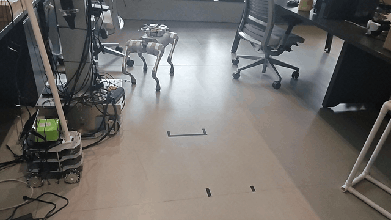
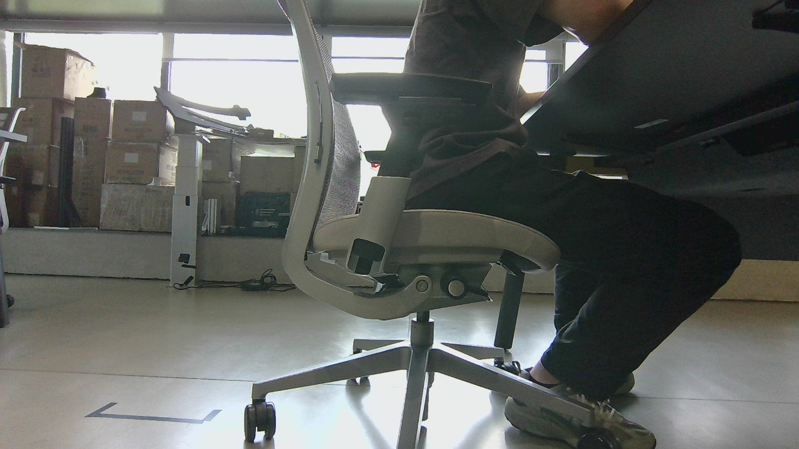
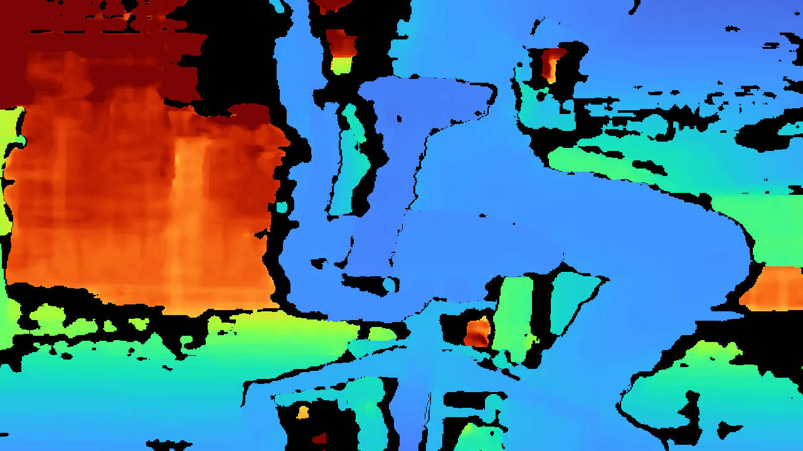
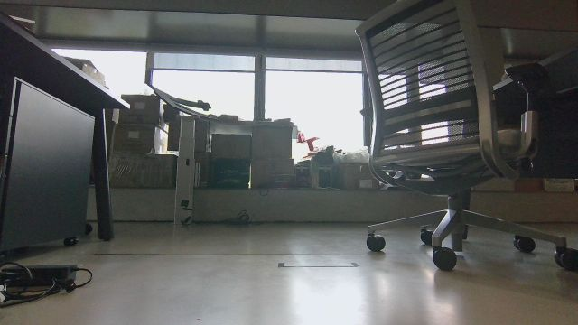
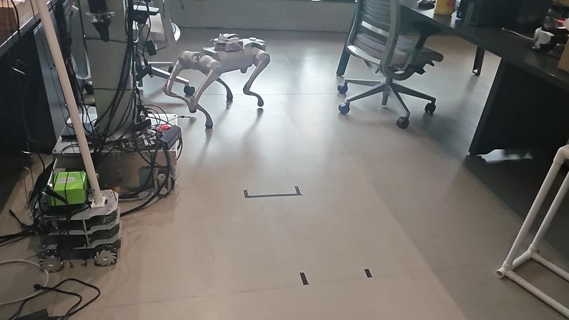
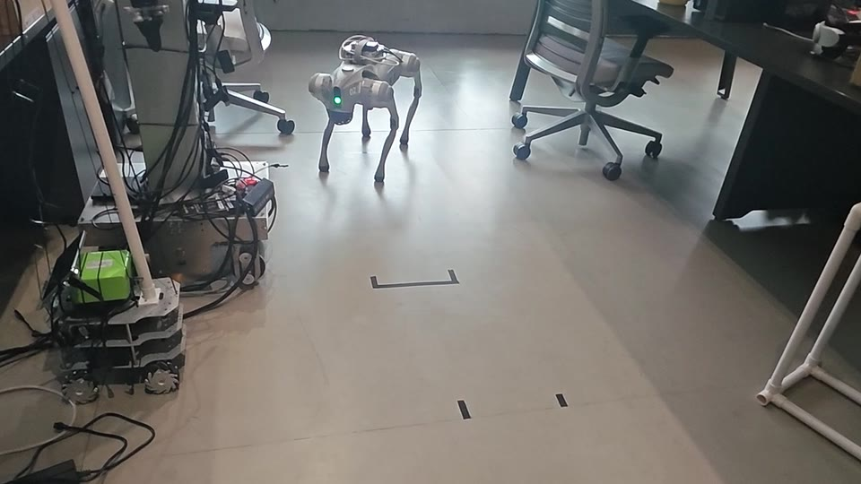
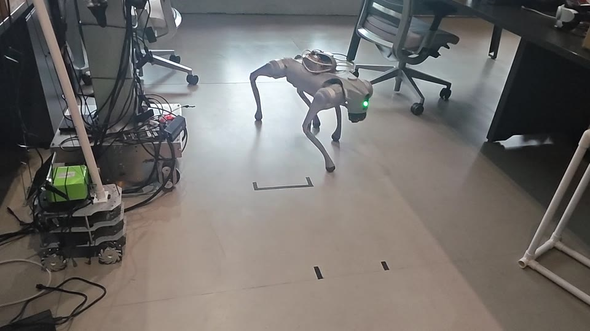

1. RGB-D + Odom
Gemini 335 发布 RGB、对齐深度与 CameraInfo；Go2X 同时提供约 20 Hz 里程计。
Embodied AI / Robot Tracking / VLN
四足机器人的时序多模态感知与轨迹推理
我把真实 Go2X 的 RGB、对齐深度、CameraInfo 与里程计接入 MiniCPM-RobotTrack：机器人侧负责 ROS 2 感知、几何信息、限频压缩和 WebSocket 数据面，模型侧通过机器人配置适配器维护 31 帧时序上下文并输出 8 点轨迹。这个项目覆盖的不只是模型调用，还包括多模态数据契约、深度编码、QoS、跨机服务生命周期、轨迹接口和运动安全门。当前实测止于 Shadow / dry-run，控制桥保持未解锁。

Verified Result
输入、上下文、输出和安全状态都可以量化，不用“模型已经接上”这种模糊描述代替验证。
31 帧上下文 模型连续利用历史观测，而不是只对单帧图像做一次性判断。
8 点轨迹 输出是面向机器人执行层的局部轨迹接口，不只是目标类别或自然语言描述。
18 s / 140 次 Official Shadow 连续推理；0 次模型错误、0 次传感器故障。
控制层未解锁
shadow + dry_run + armed=false，轨迹输出没有直接变成真机速度。
MiniCPM-RobotTrack Stack
我把 MiniCPM-RobotTrack 放在一个明确的机器人接口里：左侧是可校验的多模态观测，中间是带历史状态的轨迹推理，右侧是硬件适配与安全门。
/cmd_vel_out；当前控制桥保持锁定。
System Architecture
这条链路跨越机器人主机与推理服务器。感知、传输、机器人适配、模型和运动控制相互解耦，每一层都有独立的状态和故障边界。
Gemini 335 发布 RGB、对齐深度与 CameraInfo；Go2X 同时提供约 20 Hz 里程计。
OpenCV 解码、缩放和重新编码；RGB 走 JPEG，16 位深度走 nearest-neighbor + PNG。
WebSocket 传输压缩图像、深度、内参与里程计；客户端心跳维持长连接。
绑定 topic、640×360 内参、TF 外参契约、四足底盘类型与 0.15 m/s 速度边界。
MiniCPM-RobotTrack 使用 31 帧历史进行 Official Shadow 推理，输出 8 点局部轨迹。
系统边界：MiniCPM-RobotTrack 输出轨迹 ≠ Go2X 已经执行轨迹。推理服务、机器人适配器和运动桥是三层独立接口；本次只验证前两层。
RGB-D Evidence
页面直接保留相机实机帧，而不是设备宣传图。深度已按 RGB 投影几何对齐，便于后续目标定位、距离保护和轨迹约束。


| 验证对象 | 结果 | 为什么重要 |
|---|---|---|
| RGB 有效视场角 | H 85.6306° / V 55.0358° / D 93.4943° | 由实际 CameraInfo 内参计算，后续投影与视野判断使用的是这组几何，而不是只抄产品页。 |
| 原生深度视场角 | H 91.2381° / V 65.1269° / D 100.6216° | 说明深度原始视野宽于 RGB；对齐到 RGB 后必须接受裁切，不能把两者当成同一相机模型。 |
| 双目基线 | 约 50.1541 mm | 是理解深度几何和近远距离质量的重要硬件参数。 |
| 默认计算负载 | 点云、IR、IMU 默认关闭 | 先保证核心 RGB-D 链路稳定，按任务需要再开启高负载数据，避免“全部打开”造成无意义资源竞争。 |
Cross-machine Inference
MiniCPM-RobotTrack 需要连续、最新且几何含义不被破坏的观测。机器人侧因此单独处理 RGB、16 位深度、频率、QoS 和消息头。

JPEG 解码后使用 INTER_AREA 缩放，再以 quality 80 编码；保留原始 ROS header，让服务端仍可判断帧时间。
从 compressedDepth 中定位 PNG，按 16 位深度解码，使用 INTER_NEAREST 缩放并重新封装，避免插值制造不存在的距离值。
9.67 Hz跨机 RGB 实测频率
4.84 Hz跨机深度实测频率
19.67 Hz跨机里程计实测频率
QoS depth = 1只保留最新消息，限制跨机积压
Real Motion
已有运动素材说明 Go2X 能在真实室内环境中行走、转向和接近；本轮新增工作则集中在 RGB-D 与模型接口，两类证据不混为一谈。



Engineering Ownership
将 RGB、compressedDepth、CameraInfo 和 Odom 组织成模型可消费的数据契约，同时保留 header、编码格式和传感器几何信息。
unitree_go2x_gemini335.yaml 声明话题、相机内外参契约、四足运动模型、速度限制与深度用途，让模型服务不写死某一台机器人。
MiniCPM-RobotTrack 维护 31 帧历史上下文，输出 8 点局部轨迹；接口从“识别到了什么”推进到“机器人下一段如何移动”。
minicpm_rgbd_relay.py 分离 RGB 与深度处理路径，用最近邻缩放保存离散毫米深度，不把深度图当普通彩色图片处理。
go2x_minicpm_interface.sh 管理 relay、rosbridge、端口、PID、进程组、日志与状态；停止时清理整组子进程，避免残留节点。
go2x_shadow.sh 固定 Official + Shadow + dry-run；底层速度桥另设 armed=false 和 deadman，不允许模型服务直接获得真机运动权限。
Technical Challenges
问题：模型需要 RGB、深度、内参、外参和 Odom，但它们的频率、编码与坐标系不同。
处理：用 ROS topic + YAML adapter 显式描述每个输入和机器人运动模型。
结果：服务端不依赖隐式约定，换机器人时可以替换配置而不是重写推理主流程。
问题：双线性插值会在障碍边缘生成虚假的中间距离。
处理：解析 compressedDepth PNG，保留 16UC1，并使用最近邻缩放。
结果：传到模型侧的深度仍保持离散测距语义，可继续用于安全判断。
问题：两路 1280×720@30 原始流跨机后出现积压、延迟和重连。
处理：建立 640×360、RGB 10 Hz / Depth 5 Hz 的专用 relay。
结果：模型侧拿到持续更新的输入，而不是处理越来越旧的帧。
问题：服务端 Ping 与客户端心跳重复，约 20 秒出现一次断线重连。
处理：移除冗余服务端 Ping，保留客户端心跳。
结果：18 秒连续 Shadow 测试无连接中断。
问题：服务重启后的前 3–5 秒会短暂出现 camera_stale；旧帧混入 31 帧窗口会污染时序判断。
处理：区分“进程已启动”和“最新观测已到达”，按时间戳与实测频率检查输入。
结果：历史上下文建立在新鲜帧上，而不是在积压队列上。
问题：8 点轨迹仍可能受时延、坐标或目标误判影响，不能直接等同于安全速度。
处理：模型 Shadow、服务 dry-run、底桥 armed=false，并保留限速与 deadman。
结果：可以先统计轨迹质量，再单独审批真实运动链路。
Verification
| 验证对象 | 结果 | 说明 |
|---|---|---|
| 机器人适配器 | Go2X 专用 YAML 已接入 | 包含 RGB-D / Odom topic、640×360 内参、TF 外参契约、holonomic quadruped 与速度边界。 |
| 多模态输入 | RGB 9.67 / Depth 4.84 / Odom 19.67 Hz | 三路数据均从真实 Go2X 跨机到达 MiniCPM-RobotTrack 服务端。 |
| Shadow 推理 | 18 秒、140 次、8 点轨迹 | 0 模型错误、0 传感器故障；使用 31 帧历史观测。 |
| 服务与接口测试 | 23 项通过 | 覆盖本轮 MiniCPM-RobotTrack / Go2X 机器人配置与接口修改的既有测试集。 |
| 运动安全 | 未向真机发布速度 | 无 /cmd_vel_out 发布者；底层桥保持 armed=false。 |
For Reviewers
把视觉语言模型放进真实机器人数据面，贯通传感器、ROS 2、跨机传输、模型输入和轨迹接口。
不只做单帧识别，而是组合 RGB、深度、Odom 和 31 帧历史，输出面向运动层的 8 点轨迹。
用 YAML adapter、QoS、服务生命周期、日志与状态接口降低硬件耦合，能定位模型之外的系统问题。
明确区分轨迹推理和真实执行；未完成外参、深度保护与低速闭环前，不用成功视频掩盖系统边界。
Honest Status
| 状态 | 内容 | 进入下一阶段的判据 |
|---|---|---|
| 已完成 | Gemini 335 RGB-D、Odom、rclpy relay、rosbridge、Go2X YAML adapter、31 帧上下文与 MiniCPM-RobotTrack 8 点轨迹 Shadow 推理。 | 已有实机帧、输入频率、连接状态、140 次推理与测试结果作为证据。 |
| 待标定 | Gemini 335 到 base_link 的六自由度安装外参；当前 publish_mount_tf=false。 |
完成最终支架安装和机械测量后，验证坐标投影误差。 |
| 待安全验证 | 启用 MiniCPM-RobotTrack 深度保护、速度上限、急停、IMU / 时间同步策略。 | 静态台架和牵引保护下连续通过，再进入低速地面测试。 |
| 待实机闭环 | 将 8 点轨迹经过独立控制器转换为受限速度，验证跟随、停止和异常恢复。 | 先在短距离、单目标场景记录规划轨迹与实际轨迹，再扩大任务难度。 |
| 研究目标 | 长程 VLN 中的偏航检测、历史状态利用、语义子目标与恢复。 | 建立成功率、路径效率、偏航发现延迟和恢复成功率，而不是只展示成功视频。 |